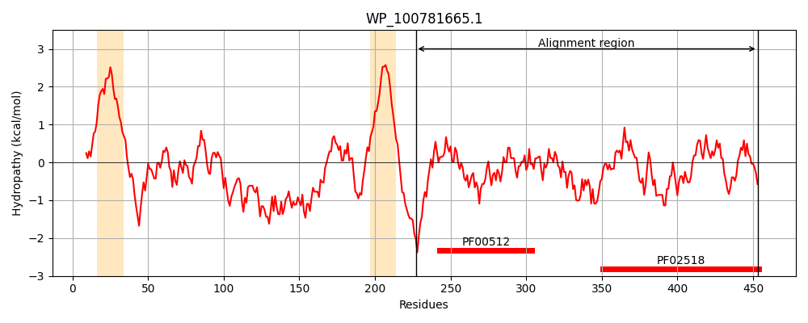
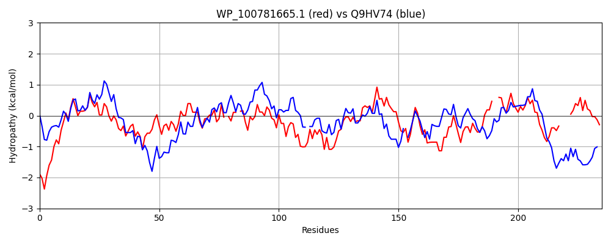

Hit Accession: Q9HV74
Hit TCID: 2.A.21.9.1
Hit Description: gnl|BL_ORD_ID|18210 gnl|TC-DB|Q9HV74|2.A.21.9.1 Probable two-component sensor (CbrA) - Pseudomonas aeruginosa.
Mach Len: 235
e:0.000000
Query TMS Count : 2
Hit TMS Count: 13
TMS-Overlap Score: 0.000000
Predicted Substrates:None
BLAST Alignment:
Score: 314 , Bit scores: 125 bits, E-value: 1.0e-30, Alignment length: 235, Percentage identity: 36
Query: 227 QQLQEAMARKEKLMALGHLAAGVAHEIRNPLSSIKGLAKYFAERTPPGGEAQELALVMAKEADRLNRVVSELLELVRP-AHLN-YQPVDINALIHHSLQLVSQDAQSRGIELQFTPRPELTSIKADPDRLNQVLLNLYLNAMQAIGRDGVIHVSASEADRQRVKIVVKDSGKGMSDEELQAIFTPYFTTK--ADGTGLGLAVVQNIIEQHGGTIRAES----QPGAGAIFTLWLP 453
Q L++ + E+L ++G LAAGVAHEI NP++ I LA+ E GE E++ + + R++R+V L+ +HL +PV ++ + ++ L+S + +S +E F ++ D RL QVL+NL NA A G I V SEA V +VV+D G G+ + +F P+FTTK GTGLGLA+V +I+E+H G I ES Q G F + LP
Sbjct: 742 QLLEDKLVHSERLASIGRLAAGVAHEIGNPITGIACLAQNLREEREGDGELTEISEQILDQTKRVSRIVQSLMSFAHSGSHLQALEPVCLSEVAQEAIGLLSLNRRSVEVEF-FNLCDPAHWVEGDSQRLAQVLINLLSNARDASPPGGAIRV-RSEASEHTVDLVVEDEGSGIPKAIMDQLFEPFFTTKDPGKGTGLGLALVYSIVEEHYGQITIESPTDHQREGGTRFRVTLP 974 | Protein Hydropathy Plots: |
|---|
|  |  |
Pairwise Alignment-Hydropathy Plot:
|
|---|
|  |